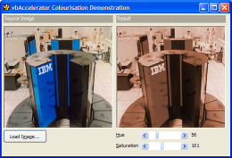

Colourisation Demonstration (69K)
Colourisation Demonstration (69K)
 23 Oct 2003
23 Oct 2003
First Posted
 Hue Luminance and Saturation (HLS) Model and Manipulating Colours
Hue Luminance and Saturation (HLS) Model and Manipulating Colours

Colourisation
Adjust the colour of an image for sepia-style effects
Image colourisation is a widely-used technique in image processing which can be used to create sepia-toned effects as well as adjusting images so they can be used as watermarks and in the creation of layered background images. This article demonstrates how to use the Hue, Luminance and Saturation model to perform colourisation and to adjust the intensity of the applied effect.
About Colourisation
The Hue, Luminance and Saturation article describes how colours can be modelled as a combination of these three variables rather than the standard Red, Green and Blue. This provides a mechanism to perform colourisation, since it enables the colour of a pixel to be varied by adjusting the Hue and Saturation independently of its brightness.
Using this code, a given R,G,B value can be colourised as follows:
Dim h As Single, s As Single, l As Single Dim newR As Long, newG As Long, newB As Long ' Obtain the luminance: RGBToHLS origR, origG, origB, h, s, l ' Now get the new colour using the input hue and saturation HLSToRGB hue, saturation, l, newR, newG, newB
Once this is done you can then control the intensity with which the colourisation effect is applied. This is done by adding the difference between the new colourised colour and the original, multiplied by an intensity between 0 and 1:
newR = origR + intensity * (newR - origR) newG = origG + intensity * (newG - origG) newB = origB + intensity * (newB - origB)
Applying the Filter
Given this algorithm, it is straightforward to apply it to an image using a DIB Section. For each pixel in the image array, read the red, green and blue values and then apply the algorithm, writing out the new value. The first thing to note is that my HLS code has Hue values between -1 and 5, and Luminance and Saturation between 0 and 1. To make the input parameters easier to use, input Hue and Luminance are instead expressed as integers between 0 and 255, in the same way that Microsoft applications do. This means the input values need to be denormalized before use so they match the expected values.
' Convert source and destination images into arrays:
Dim bDib() As Byte
Dim bDibDst() As Byte
Dim tSA As SAFEARRAY2D
Dim tSADst As SAFEARRAY2D
' Get the bits in the from DIB section:
With tSA
.cbElements = 1
.cDims = 2
.Bounds(0).lLbound = 0
.Bounds(0).cElements = cSrc.Height
.Bounds(1).lLbound = 0
.Bounds(1).cElements = cSrc.BytesPerScanLine
.pvData = cSrc.DIBSectionBitsPtr
End With
CopyMemory ByVal VarPtrArray(bDib()), VarPtr(tSA), 4
' Get the bits in the from DIB section:
With tSADst
.cbElements = 1
.cDims = 2
.Bounds(0).lLbound = 0
.Bounds(0).cElements = cDst.Height
.Bounds(1).lLbound = 0
.Bounds(1).cElements = cDst.BytesPerScanLine()
.pvData = cDst.DIBSectionBitsPtr
End With
CopyMemory ByVal VarPtrArray(bDibDst()), VarPtr(tSADst), 4
' Perform colourisation
Dim x As Long
Dim y As Long
Dim xEnd As Long
Dim yEnd As Long
Dim h As Single
Dim s As Single
Dim l As Single
Dim lR As Long
Dim lG As Long
Dim lB As Long
Dim hDN As Single
Dim sDN As Single
Dim fInt As Single
' Calculate denormalized Hue, Saturation & Intensity:
hDN = ((m_lHue * 6#) / 255#) - 1#
sDN = (m_lSaturation / 255#)
fInt = (m_lIntensity / 100#)
xEnd = cSrc.BytesPerScanLine() - 3
yEnd = cSrc.Height - 1
For x = 0 To xEnd Step 3
For y = 0 To yEnd
' Obtain the luminance:
RGBToHLS bDib(x + 2, y), bDib(x + 1, y), bDib(x, y), h, s, l
' Now get the new colour using the input hue and saturation
HLSToRGB hDN, sDN, l, lR, lG, lB
' Apply the intensity of the effect:
lR = bDib(x + 2, y) + fInt * (lR - bDib(x + 2, y))
lG = bDib(x + 1, y) + fInt * (lG - bDib(x + 1, y))
lB = bDib(x, y) + fInt * (lB - bDib(x, y))
' Set new destination colour:
bDibDst(x + 2, y) = lR
bDibDst(x + 1, y) = lG
bDibDst(x, y) = lB
Next y
Next x
CopyMemory ByVal VarPtrArray(bDibDst), 0&, 4
CopyMemory ByVal VarPtrArray(bDib), 0&, 4
Conclusion
The sample code demonstrates applying colourisation to a True Colour DIB Section. It would be simple to modify the code so it applies to an alpha DIB Sections as well.